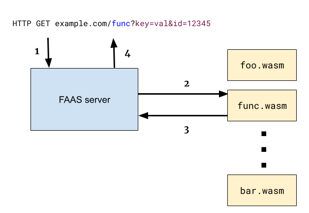

This post is best described as a technology demonstration; it melds together web servers, plugins, WebAssembly, Go, Rust and ABIs. Here's what it shows:
- How to load WASM code with WASI in a Go environment and hook it up to a web server.
- How to implement web server plugins in any language that can be compiled to WASM.
- How to translate Go programs into WASM that uses WASI.
- How to translate Rust programs into WASM that uses WASI.
- How to write WAT (WebAssembly Text) code that uses WASI to interact with a non-JS environment.
We're going to build a simple FAAS (Function as a Service) server in Go that lets us write modules in any language that has a WASM target. Comparing to existing technologies, it's something between GCP's Cloud Functions, Cloud Run and good old CGI.
Design
Let's start with a high-level diagram describing how the system works:
The steps numbered in the diagram are:
- The FAAS server receives an HTTP GET request, with a path consisting of a module name (func in the example in the diagram) and an arbitrary query string.
- The FAAS server finds and loads the WASM module corresponding to the module name it was provided, and invokes it with a description of the HTTP request.
- The module emits output to its stdout, which is captured by the FAAS server.
- The FAAS server uses the module's stdout as the contents of an HTTP Response to the request it received.
The FAAS server
We'll start our deep dive with the FAAS server itself (full code here). The HTTP handling part is straightforward:
func httpHandler(w http.ResponseWriter, req *http.Request) {
parts := strings.Split(strings.Trim(req.URL.Path, "/"), "/")
if len(parts) < 1 {
http.Error(w, "want /{modulename} prefix", http.StatusBadRequest)
return
}
mod := parts[0]
log.Printf("module %v requested with query %v", mod, req.URL.Query())
env := map[string]string{
"http_path": req.URL.Path,
"http_method": req.Method,
"http_host": req.Host,
"http_query": req.URL.Query().Encode(),
"remote_addr": req.RemoteAddr,
}
modpath := fmt.Sprintf("target/%v.wasm", mod)
log.Printf("loading module %v", modpath)
out, err := invokeWasmModule(mod, modpath, env)
if err != nil {
log.Printf("error loading module %v", modpath)
http.Error(w, "unable to find module "+modpath, http.StatusNotFound)
return
}
// The module's stdout is written into the response.
fmt.Fprint(w, out)
}
func main() {
mux := http.NewServeMux()
mux.HandleFunc("/", httpHandler)
log.Fatal(http.ListenAndServe(":8080", mux))
}
This server listens on port 8080 (feel free to change this or make it more configurable), and registers a catch-all handler for the root path. The handler parses the actual request URL to find the module name. It then stores some information to pass to the loaded module in the env map.
The loaded module is found with a filesystem lookup in the target directory relative to the FAAS server binary. All of this is just for demonstration purposes and can be easily changed, of course. The handler then calls invokeWasmModule, which we'll get to shortly. This function returns the invoked module's stdout, which the handler prints out into the HTTP response.
Running WASM code in Go
Given a WASM module, how do we run it programmatically in Go? There are several high-quality WASM runtimes that work outside the browser environment, and many of them have Go bindings; for example wasmtime-go. The one I like most, however, is wazero; it's a zero-dependency, pure Go runtime that doesn't have any prerequisites except running a go get. Our FAAS server is using wazero to load and run WASM modules.
Here's invokeWasmModule:
// invokeWasmModule invokes the given WASM module (given as a file path),
// setting its env vars according to env. Returns the module's stdout.
func invokeWasmModule(modname string, wasmPath string, env map[string]string) (string, error) {
ctx := context.Background()
r := wazero.NewRuntime(ctx)
defer r.Close(ctx)
wasi_snapshot_preview1.MustInstantiate(ctx, r)
// Instantiate the wasm runtime, setting up exported functions from the host
// that the wasm module can use for logging purposes.
_, err := r.NewHostModuleBuilder("env").
NewFunctionBuilder().
WithFunc(func(v uint32) {
log.Printf("[%v]: %v", modname, v)
}).
Export("log_i32").
NewFunctionBuilder().
WithFunc(func(ctx context.Context, mod api.Module, ptr uint32, len uint32) {
// Read the string from the module's exported memory.
if bytes, ok := mod.Memory().Read(ptr, len); ok {
log.Printf("[%v]: %v", modname, string(bytes))
} else {
log.Printf("[%v]: log_string: unable to read wasm memory", modname)
}
}).
Export("log_string").
Instantiate(ctx)
if err != nil {
return "", err
}
wasmObj, err := os.ReadFile(wasmPath)
if err != nil {
return "", err
}
// Set up stdout redirection and env vars for the module.
var stdoutBuf bytes.Buffer
config := wazero.NewModuleConfig().WithStdout(&stdoutBuf)
for k, v := range env {
config = config.WithEnv(k, v)
}
// Instantiate the module. This invokes the _start function by default.
_, err = r.InstantiateWithConfig(ctx, wasmObj, config)
if err != nil {
return "", err
}
return stdoutBuf.String(), nil
}
Interesting things to note about this code:
- wazero supports WASI, which has to be instantiated explicitly to be usable by the loaded modules.
- A lot of the code deals with exporting logging functions from the host (the Go code of the FAAS server) to the WASM module.
- We set up the loaded module's stdout to be redirected to a buffer, and set up its environment variables to match the env map passed in.
There are several way for host code to interact with WASM modules using only the WASI API and ABI. Here, we opt for using environment variables for input and stdout for output, but there are other options (see the Other resources section in the bottom for some pointers).
This is it - the whole FAAS server, about 100 LOC of commented Go code. Now let's move on to see some WASM modules this thing can load and run.
Writing modules in Go
We can compile Go code to WASM that uses WASI. Here's a basic Go program that emits a greeting and a listing of its environment variables to stdout:
package main
import (
"fmt"
"os"
)
func main() {
fmt.Println("goenv environment:")
for _, e := range os.Environ() {
fmt.Println(" ", e)
}
}
To build using the standard Go toolchain:
$ GOOS=wasip1 GOARCH=wasm gotip build -o target/goenv.wasm examples/goenv/goenv.go
(the wasip1 target name refers to "WASI Preview 1")
Sharp-eyed readers will recall that the target/ directory is precisely where the FAAS server looks for *.wasm files to load as modules. Now that we've placed a module named goenv.wasm there, we're ready to launch our server with go run . in the root directory. We can issue a HTTP request to its goenv module in a separate terminal:
$ curl "localhost:8080/goenv?foo=bar&id=1234"
goenv environment:
http_method=GET
http_host=localhost:8080
http_query=foo=bar&id=1234
remote_addr=127.0.0.1:59268
http_path=/goenv
And looking at the terminal where the FAAS server runs we'll see some logging like:
2023/04/29 06:35:59 module goenv requested with query map[foo:[bar] id:[1234]]
2023/04/29 06:35:59 loading module target/goenv.wasm
Another option to build this is using the TinyGo compiler. In our FAAS project structure, the invocation from the root directory is:
$ tinygo build -o target/goenv.wasm -target=wasi examples/goenv/goenv.go
Before Go 1.21, TinyGo has been the only way to target WASI, but this support has been part of the standard toolchain for a few releases now.
Writing modules in Rust
Rust is another language that has good support for WASM and WASI in the build system. After adding the wasm32-wasi target with rustup, it's as simple as passing the target name to cargo:
$ cargo build --target wasm32-wasi --release
The code is straightforward, similarly to the Go version:
use std::env;
fn main() {
println!("rustenv environment:");
for (key, value) in env::vars() {
println!(" {key}: {value}");
}
}
Writing modules in WebAssembly Text (WAT)
As we've seen, compiling Go and Rust code to WASM is fairly easy; looking for a challenge, let's write a module in WAT! As I've written before, I enjoy writing directly in WAT; it's educational, and produces remarkably compact binaries.
The "educational" aspect quickly becomes apparent when thinking about our task. How exactly am I supposed to write to stdout or read environment variables using WASM? This is where WASI comes in. WASI defines both an API and ABI, both of which will be visible in our sample. The following shows some code snippets with explanations; for the full code check out the sample repository.
First, I want to show how output to stdout is done; we start by importing the fd_write WASI system call:
(import "wasi_snapshot_preview1" "fd_write" (func $fd_write (param i32 i32 i32 i32) (result i32)))
Apparently, it has four i32 parameters and returns an i32; what do all of these mean? Unfortunately, WASI documentation could use a lot of work; the resources I found useful are [1]:
With this in hand, I was able to concoct a useful println equivalent in WAT that uses fd_write under the hood:
;; println prints a string to stdout using WASI.
;; It takes the string's address and length as parameters.
(func $println (param $strptr i32) (param $len i32)
;; Print the string pointed to by $strptr first.
;; fd=1
;; data vector with the pointer and length
(i32.store (global.get $datavec_addr) (local.get $strptr))
(i32.store (global.get $datavec_len) (local.get $len))
(call $fd_write
(i32.const 1)
(global.get $datavec_addr)
(i32.const 1)
(global.get $fdwrite_ret)
)
drop
;; Print out a newline.
(i32.store (global.get $datavec_addr) (i32.const 850))
(i32.store (global.get $datavec_len) (i32.const 1))
(call $fd_write
(i32.const 1)
(global.get $datavec_addr)
(i32.const 1)
(global.get $fdwrite_ret)
)
drop
)
This uses some globals that you'll have to look up in the full code sample if you're interested. Here's another helper function that prints out a zero-terminated string to stdout:
;; show_env emits a single env var pair to stdout. envptr points to it,
;; and it's 0-terminated.
(func $show_env (param $envptr i32)
(local $i i32)
(local.set $i (i32.const 0))
;; for i = 0; envptr[i] != 0; i++
(loop $count_loop (block $break_count_loop
(i32.eqz (i32.load8_u (i32.add (local.get $envptr) (local.get $i))))
br_if $break_count_loop
(local.set $i (i32.add (local.get $i) (i32.const 1)))
br $count_loop
))
(call $println (local.get $envptr) (local.get $i))
)
The fun part about writing assembly is that there are no abstractions. Everything is out in the open. You know how strings are typically represented using either zero termination (like in C) or a (start, len) pair? In manual WAT code that uses WASI we have the pleasure of using both approaches in the same program :-)
Finally, our main function:
(func $main (export "_start")
(local $i i32)
(local $num_of_envs i32)
(local $next_env_ptr i32)
(call $log_string (i32.const 750) (i32.const 19))
;; Find out the number of env vars.
(call $environ_sizes_get (global.get $env_count) (global.get $env_len))
drop
;; Get the env vars themselves into memory.
(call $environ_get (global.get $env_ptrs) (global.get $env_buf))
drop
;; Print out the preamble
(call $println (i32.const 800) (i32.const 19))
;; for i = 0; i != *env_count; i++
;; show env var i
(local.set $num_of_envs (i32.load (global.get $env_count)))
(local.set $i (i32.const 0))
(loop $envvar_loop (block $break_envvar_loop
(i32.eq (local.get $i) (local.get $num_of_envs))
(br_if $break_envvar_loop)
;; next_env_ptr <- env_ptrs[i*4]
(local.set
$next_env_ptr
(i32.load (i32.add (global.get $env_ptrs)
(i32.mul (local.get $i) (i32.const 4)))))
;; print out this env var
(call $show_env (local.get $next_env_ptr))
(local.set $i (i32.add (local.get $i) (i32.const 1)))
(br $envvar_loop)
))
)
We can now compile this WAT code into a FAAS module and re-run the server:
$ wat2wasm examples/watenv.wat -o target/watenv.wasm
$ go run .
Let's try it:
$ curl "localhost:8080/watenv?foo=bar&id=1234"
watenv environment:
http_host=localhost:8080
http_query=foo=bar&id=1234
remote_addr=127.0.0.1:43868
http_path=/watenv
http_method=GET
WASI: API and ABI
I've mentioned the WASI API and ABI earlier; now it's a good time to explain what that means. An API is a set of functions that programs using WASI have access to; one can think of it as a standard library of sorts. Go programmers have access to the fmt package and the Println function within it. Programs targeting WASI have access to the fd_write system call in the wasi_snapshow_preview1 module, and so on. The API of fd_write also defines how this function takes parameters and what it returns. Our sample uses three WASI functions: fd_write, environ_sizes_get and environ_get.
An ABI is a little bit less familiar to most programmers; it's the run-time contract between a program and its environment. The WASI ABI is currently unstable and is described here. In our program, the ABI manifests in two ways:
- The main entry point we export is the _start function. This is automatically called by a WASI-supporting host after setup.
- Our WASM code exports its linear memory to the host with (memory (export "memory") 1). Since WASI APIs require passing pointers to memory, both the host and the WASM module need a shared understanding of how to access this memory.
Naturally, both the Go and Rust implementations of FAAS modules comply to the WASI API and ABI, but this is hidden by the compiler from programmers. In the Go program, for example, all we need to do is write a main function as usual and therein emit to stdout using Println. The Go compiler will properly export _start and memory:
$ wasm-objdump -x target/goenv.wasm
... snip
Export[2]:
- func[1028] <_rt0_wasm_wasip1> -> "_start"
- memory[0] -> "memory"
... snip
And will properly hook things up to call our code from _start, etc.
WASI and plugins
The FAAS server presented in this post is clearly an example of developing plugins using WASM and WASI. This is an emerging and exciting area in programming and lots of progress is being made on multiple fronts. Right now, WASI modules are limited to interacting with the environment via means like environment variables and stdin/stdout; while this is fine for interacting with the outside world, for host-to-module communication it's not amazing, in my experience. Therefore the WASM standards committee is working of further improvements to WASI that may include sockets and other means of passing data between hosts and modules.
In the meantime, projects are making do with what they have. For example, the sqlc Go package supports WASM plugins. The communication with plugins happens as follows: the host encodes a command into a protobuf and emits it to the plugin's stdin; it then reads the plugin's stdout for a protobuf-encoded response.
Other projects are taking more maverick approaches; for example, the Envoy proxy supports WASM plugins by defining a custom API and ABI between the host and WASM modules. I'll probably write more about this in a later post.
Other resources
Here are some additional resources on the same topic as this post:
- Building a WebAssembly-powered serverless platform - the post that inspired this one. Other WASM-related articles from that blog are also recommended.
- wagi - a more featured approch with the same idea, implemented in Rust.
- WCGI - an even more CGI-conformant approach.
| [1] | The main Go compiler supported WASM for a while, but only as a target for browsers & JS (I wrote a bit about it recently). The news in 1.21 is the GOOS=wasip1 support, which hooks up Go's internal syscalls to WASI APIs, sets up the ABI etc. |
| [2] | These resources tend to disappear and move around without notice; if you notice a dead link, please drop me a note and I'll look for a more up-to-date source. |